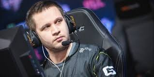
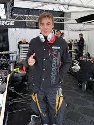

В 2005 году Егор познакомился с Иваном Шевцовым, который,
в свою очередь, привел Маркелова в команду DTS.Chatrix.
Началом профессиональной карьеры можно считать первый
выездной турнир Егора — КиберМетель 2005, на котором DTS
вышли в полуфинал, но проиграли команде A-Gaming. Через
некоторое время из DTS образовалась новая команда —
HellRaisers — на тот момент ещё слабая команда с игроками-любителями.
Со временем, HellRaisers, выиграв несколько турниров, распадаются.
Через год команда в полном составе вернулась, вновь под тегом DTS.Chatrix[2].